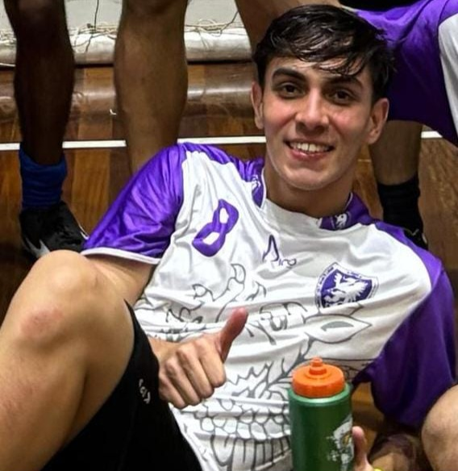

BR

Bruno de Andrade Gama Kraker
NUSP 8101891Suposto estudante de SI no 6° período!
Curto jogar futebol, ouvir um pagode e estudar. Ainda me achando no mundo da computação, mas tentando ingressar na área de dados.
Também gosto de sofrer, sentir raiva e quase infartar assistindo jogos do Corinthians!